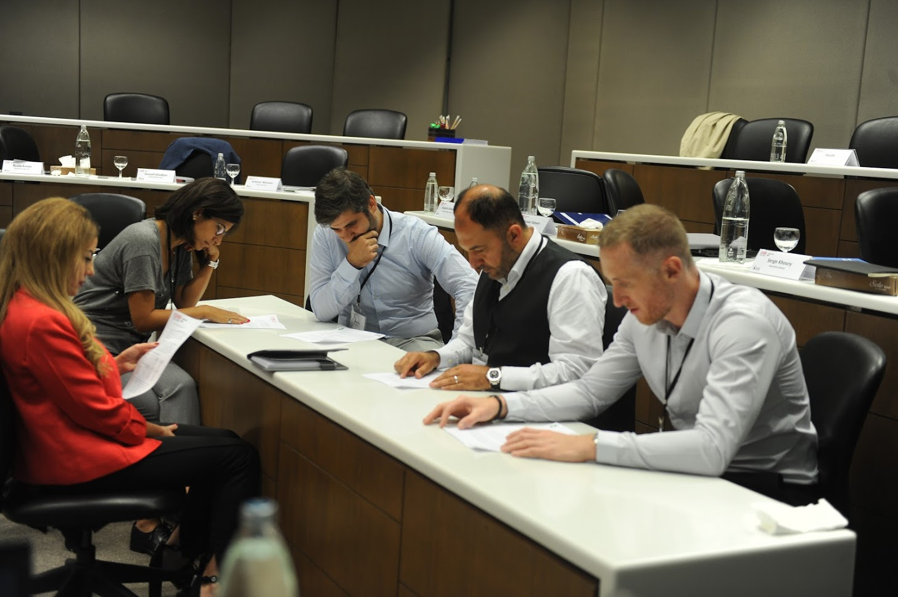

PhD in Business Administration
Shape the Future of Business Scholarship
For Lebanon, the region, and the world
Discover the PhD in Business Administration
The PhD in Business Administration at the Suliman S. Olayan School of Business (OSB) is a full-time, fully-funded research-intensive doctoral program that prepares exceptional scholars to produce rigorous, relevant, and original research and to become future academic leaders. Located at the American University of Beirut, the program offers advanced methodological training, disciplinary depth, close faculty mentorship, and a distinctive platform for studying business questions with regional relevance and global significance.
Research Areas
Find your research direction in Business Analytics, Finance, or Management, and pursue the questions you want to explore within your chosen track.
Business Analytics
Turn data into discovery and explore how analytics, AI, and emerging technologies can reshape business decisions.
Explore Business AnalyticsFinance
Research the forces shaping financial markets, institutions, and decisions.
Explore FinanceManagement
What makes organizations work? Research it.
Explore ManagementPlan Your Doctoral Path

Program Structure
Explore your doctoral journey, from foundational coursework to original research and dissertation.
Explore the Program StructureAdmission Requirements
Learn what you need to apply and how to prepare your application.
Explore Admission RequirementsFinancial Support
Focus on your research and development as a scholar through a planned, fully funded doctoral program.
Learn About Financial SupportFrequently Asked Questions
Quick answers to the questions prospective students ask most. For full details, visit the FAQs page.
The degree is a PhD in Business Administration. Students pursue one of three doctoral tracks: Business Analytics, Finance, or Management.
Yes. The PhD is designed as a full-time, research-intensive program requiring sustained participation in coursework, research, teaching-related activities, seminars, and dissertation work.
The regular track is designed around approximately four years of full-time study, although completion time is governed by AUB doctoral regulations and the student's research progress.
Ready To Begin Your Research Journey?
Learn about eligibility, application requirements, financial support, and the steps toward joining the PhD in Business Administration.